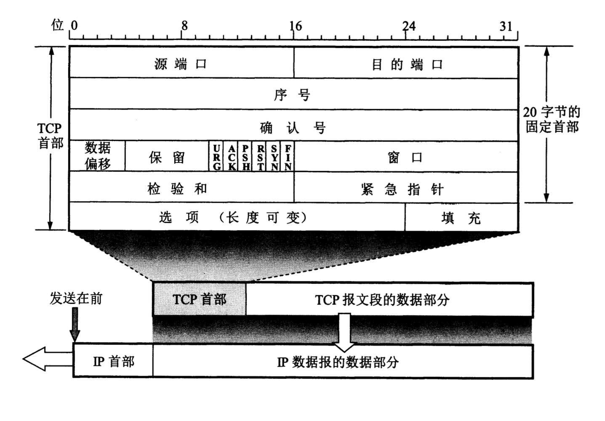

计算机网络/运输层/TCP报文段的首部格式 # TCP报文段的首部格式 TCP报文段分为首部和数据部分。首部的前20个字节是固定的，后面根据需要可增加

字段意义如下： 1. 源端口和目的端口 各占2个字节，分别写入源端口号和目的端口号。 2. 序号 占4字节，指明本报文段所发送的数据的第一个字节的序号。TCP连接中传送的字节流中的每一个字节都按顺序编号。 3. 确认号 占4字节，指明期望收到对方下一个报文段第一个数据字节的序号。 >若确认号
数据偏移 占4位，指明数据起始处距离报文段起始处有多远。实际上是指出TCP报文段的首部长度。
保留 保留为今后使用，但目前应置为0。
控制位 （置1有效，置0无效）
- 紧急URG(URGent) 告诉系统此报文段有紧急数据，应尽快传送（相当于高优先级的数据）。与紧急指针字段匹配使用。
- 确认ACK(ACKnowledgment) TCP规定，在连接建立后所有传送的报文段都必须把ACK置1。
- 推送PSH(PuSH) 指明本报文段希望尽快交付。用于交互式通信时，可直接创建报文并发送，不用等待缓存填满。
- 复位RST(ReSeT) 表明TCP连接中出现严重差错（如由于主机崩溃或其他原因），必须释放连接，然后重新建立运输连接。
- 同步SYN(YNchronization)emsp; 在连接建立时用来同步序号。对放若同意建立连接，则在报文段中使SYN=1和ACK=1。
- 终止FIN(FINis) 用来释放连接。
窗口 占2字节。窗口指的是发送本报文段一方的接收窗口。之所有有这个限制，是因为接收方的数据缓存空间是有限的。本字段的值可以作为接收方设置其发送窗口的依据。 >窗口字段明确指出了现在允许对方发送的数据量。窗口值经常在动态变化着。
检验和 占2字节。同UDP。
紧急指针 占2字节。紧急指针仅在URG=1时有意义，它指出了紧急数据末尾在报文段中的位置。
选项 长度可变，最长可达40字节。没有使用时，TCP的首部长度为20字节。
- 最大报文段长度MSS(Maximum Segment Size) MSS是每一个TCP报文段中的数据字段的最大长度。默认值为536字节长。
- 窗口扩大选项 占3个字节。其中有一个字节表示移位值S，新窗口值从16位扩大到
，用于获得高吞吐率的应用情形。 - 时间戳选项 占10个字节。其中最主要的字段是时间戳值字段（4字节）和时间戳回送回答字段（4字节）。此选项有两个功能：第一，用来计算往返时间RTT；第二，用来处理TCP序号超过
的情况。
参考文献：《计算机网络（第7版）》谢希仁著